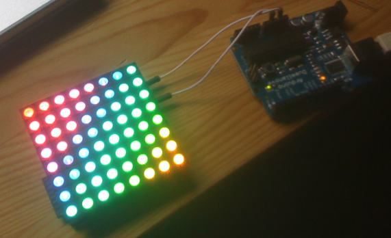
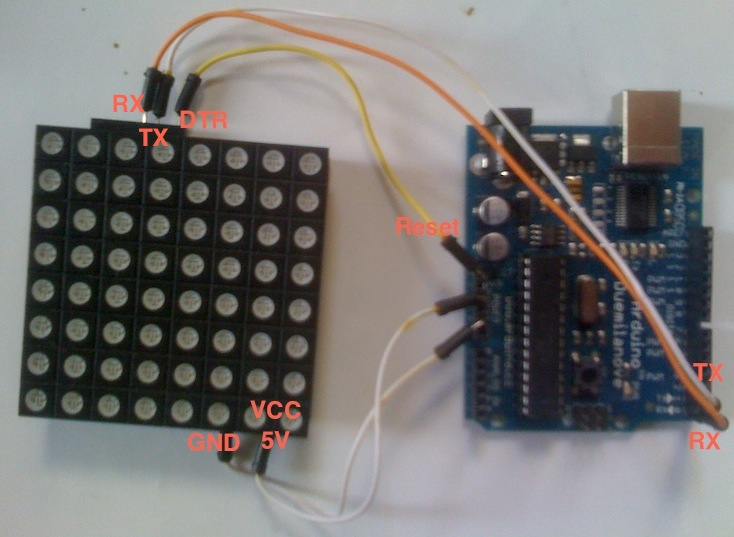

Quake like Terminal on Mac OS X: Visor Plugin

Sure you do remember Quake. And sure you di remember how cool the console faded / slided in from the top? Image this would be available for your Mac OS X Console/Terminal. Well now (actually since ages, but I just forgot to mention 😉 it is. As small SIMBL plugin called Visor Plugin allows to to bring up the Terminal via a hotkey in anytime. I really love it and can’t without it anymore.
Check it out here: http://visor.binaryage.com/
Stealth Project on a Nova 10x10x10 LED Cube
Hey guys, look at this: I just found this awesome project by Squidsoup. They put up a 10x10x10 LED Cube “NOVA 3D LED” (yes, 3 dimensions, yes that’s 1000 single controlled LEDs) and created cool stuff like webcam projection or a the “Stealth Project”, a game similar to Battleships. Just get it’s great sounds and projections:
[vimeo]http://vimeo.com/2242696[/vimeo]
More on this here: http://www.squidsoup.org/stealth/
[via nejo0017.wordpress.com]
Beginners Guide to Arduino – free PDF Download
Earthshine Design just released a free Beginners Guide to Arduino as PDF download.
Feel free to grab it here: Earthshine Design Arduino Starters Kit Manual .
It covers several experiements you’ll start your Arduino career with, especially you’ve bought thier very complete starter kit. Go for it!
[found via freeduino.de]
RainbowDuino here it is! (and how to program it)

Yay – I finally got my RainbowDuino. Unluckily I did sth wrong with the external power connection (JST 2 pin jack) and smashed a capacitor. Maybe the polarity was wrong or it couldn’t stand the 12 volts? But luckily no damage to the main system so it still works using the terminal connector (right through the 5volts of the Arduino). *phew*
The first real basic problem I ran into was how to program the Rainbowduino as there’s no USB connector and I don’t have an UART interface.
But well, nothing simpler than that: Just connect your Arduino’s Tx,Rx,GND,Reset and Vcc ports with those of the Rainbowduino, choose the right controller type in your IDE and program it as usual – works perfect for me!
Check out my Rainbowduino Editor mtXcontrol here – it’s an easy way to draw shapes on your rainbowduino!
Btw. DTR on Rainbowduino is Reset on Arduino
UPDATE:
Sorry I forgot to mention, this trick does NOT work if your host arduino is a ATmega168 – you need an ATmega328 to pass serial communication through. Before that, make sure you upload this blank sketch to your host Arduino first:
[code]
/* blank sketch to upload on Arduino */
void setup()
{
}
void loop()
{
}
[/code]
And, as multiple times requested, a picture of my complete setup:

Make sure you’ve selected the switch right. It has to point to the same side as the green Terminal connectors are. If you power rainbowduino through the white JST jack, flip it!
MySQL: How to swap entires of two columns with just one query
Check this out, I found out a really nice way how to swap values of two columns with just one query, using user defined variables. Given a table with two columns a and b. To swap their values in whole, use this query:
[text]
UPDATE my_table SET a=@tmp:=a, a=b, b=@tmp;
[/text]
Done! Isn’t that easy?
Pimp my TextMate: how to speed up search & load
As a true Ruby on Rails developer you probably work with TextMate, as it’s a plain, simple, but yet quite powerful editor. I love its open-file-by-pattern (?+T) or find-in-project (?+?+F) functions. But one thing which bothered me the most was the search time when working on big, large, massive projects. One easy tweak how to speed it up easily is to extend the file and folder exclude patterns. For example you don’t need the tmp, log or vendor folder, nor any binary files within your editor. So I just excluded them, here are my new patterns (all in one line):
Files: (excluded all images,pdf & flash)
[text]
!(/\.(?!htaccess)[^/]*|\.(png|jpg|pdf|swf)|\.(tmproj|o|pyc)|/Icon\r|/svn-commit(\.[2-9])?\.tmp)$
[/text]
Folders: (exclude tmp tools vendor uploads lang locale po old_migrations script images upload custom_maps log)
[text]
!.*/(\.[^/]*|CVS|doc|tmp|tools|vendor|uploads|lang|locale|po|old_migrations|script|images
|upload|custom_maps|log|_darcs|_MTN|\{arch\}|blib|.*~\.nib|.*\.(framework|app|pbproj|pbxproj|xcode(proj)?|bundle))$
[/text]
To change the settings go to
[text]
preferences -> advanced -> folder references
[/text]
Yeah, now my search is quite fast again!
Yeah! Just ordered a bunch of stuff from the Seeedstudio Shop, my new favorite Arduino parts dealer. I’m really looking forward to get the RainbowDuino into my hands. I’ve already order thier 8×8 RGB LED Matrix at ebay which is really promissing… Unfortunately they are located in china to shipping takes ages ;-( More soon to come ….
[youtube]http://www.youtube.com/watch?v=z_JuFGAYHq0[/youtube]
Event to be: Art vs. Technology Workshop Berlin

Just found this nice event, taking place from 20-21. June in Berlin, organized by the Tinkersoup people:
http://www.tinkersoup.de/workshop/
Unfortunately I may not be able to take part. Damn! ;-(